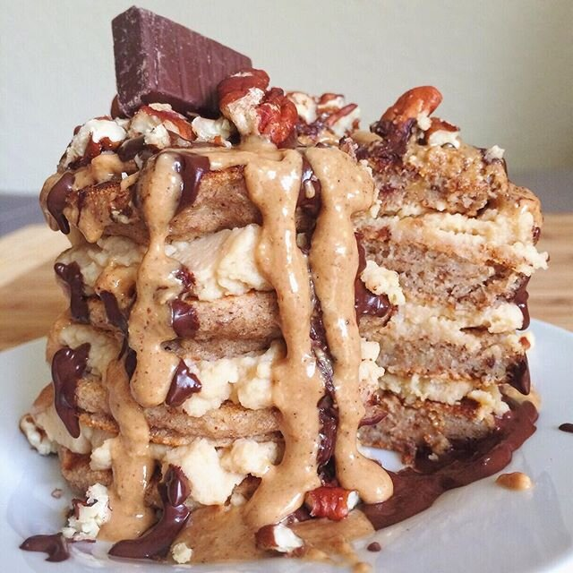

Banana Bread Pancakes (vegan)

Pretty sure I just experienced the truest meaning of "pancake" :D mini cake on my plate. Banana bread pancakes layered with a vanilla protein spread topped with banana bread nut butter, pecans, dark chocolate, and a chocolate drizzle (unsweetened cocoa, water, & stevia). CAKE.
The dark chocolate piece is my favorite part. Andrew and I found this really neat chocolate place in Portland when we visited. If you saw the vlog, you see this HUGE WEIRD VAN they drive around the city. Has anyone seen this? It's called Woodblock Chocolate. There's some story behind the weird van that the employee told us, but it confusing and I honestly don't remember anything other than Apple was involved, which is why it looks like a shaggy DJ/headphones. ANYWAYS. The kind we got is re-melted bits of other bars. It's just salt and cocoa. That's it. O_O It's amazinggggg I wish I could explain it!!
Banana Bread Pancakes (vegan, gluten free)
Serves: 1
-
1/2 banana (60 g)
-
1/4 cup spelt flour (or buckwheat or oat)
-
1 TBSP ground flax seeds
-
1/4 cup unsweetened almond milk
-
1 stevia packet
-
1/4 tsp cinnamon
-
1/2 tsp baking powder
Mash the banana well in a bowl. Then add the remaining ingredients and mix until even. Cook as 4 pancakes in a sprayed pan over low/medium heat. Should cook for 3-4 minutes the first side, then 1-2 minutes on the second.